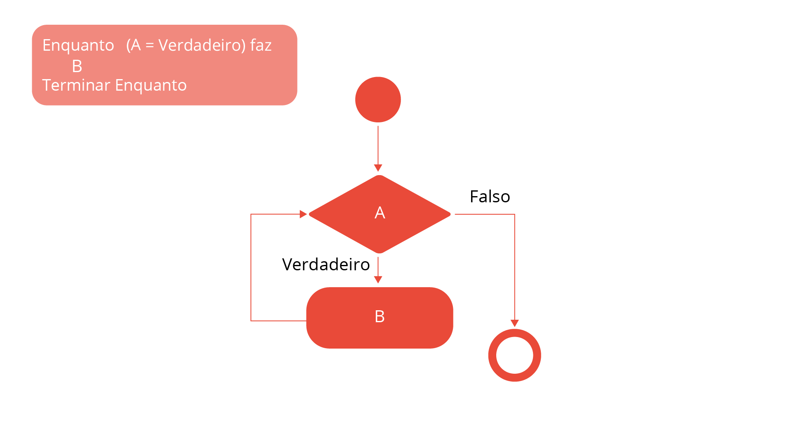
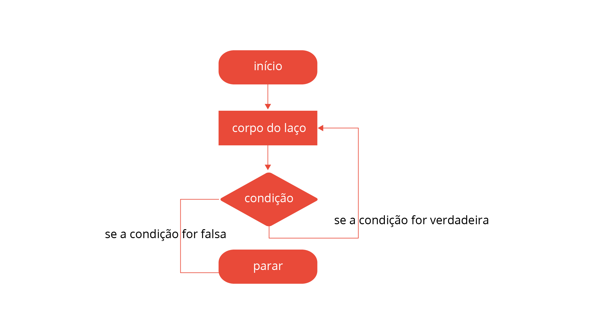

Uma variável contadora armazena um número referente a uma quantidade de elementos/interações; em repetição ela recebe um valor inicial e vai sendo incrementada a cada repetição.
Outro tipo de variável em repetição é a acumuladora, que armazena uma série de valores, em geral uma soma.
ENQUANTO-FAÇA (while-do) é testada no início e caso verdadeira ela executa os comandos repetitivamente.
Repete o modelo REPITA-ATÉ (do-while), em que é assegurado que as instruções pelo menos uma vez são executadas.
Em uma Estruturas de repeticão é possível utilizar uma variável de controle com limites pré-definidos.
for V de vi to vf passo p faça
a.ação 1;
b.ação 2;
c.ação N;
2.fimpara;
O uso da instrução for segue a estrutura PARA-ATÉ-FAÇA. Nesta estrutura de repetição, o for utiliza uma variável de controle, que determinará o início e o fim das repetições, bem como o passo para o incremento dessa variável. Esse tipo de laço também é conhecido como laço incondicional (MANZANO; OLIVEIRA, 2010), pois não existe uma definição de condição de teste para interrupção das repetições. Logo, esse seria um critério para o desenvolvedor no uso dessa estrutura de repetição, em que o valor de início e de fim são determinados para uma variável de controle.
No caso da instrução while, o teste é realizado no início, seguindo a estrutura ENQUANTO-FAÇA. Isso indica que o bloco de instruções só será executado se a condição assim permitir. Por outro lado, a instrução do-while coloca o teste após a execução do bloco de instrução, conforme a estrutura REPITA-ATÉ, em que o teste é feito no final (VILARIM, 2004). Com base nesse critério, o desenvolvedor pode definir qual estrutura utilizar, de acordo com a posição do teste da condição, se no início ou no fim da execução de um bloco de instruções que será repetido.
Em síntese, repetições com for utilizam variável de controle, repetições com while realizam testes no início e repetições do tipo do-while adotam testes no final do laço.